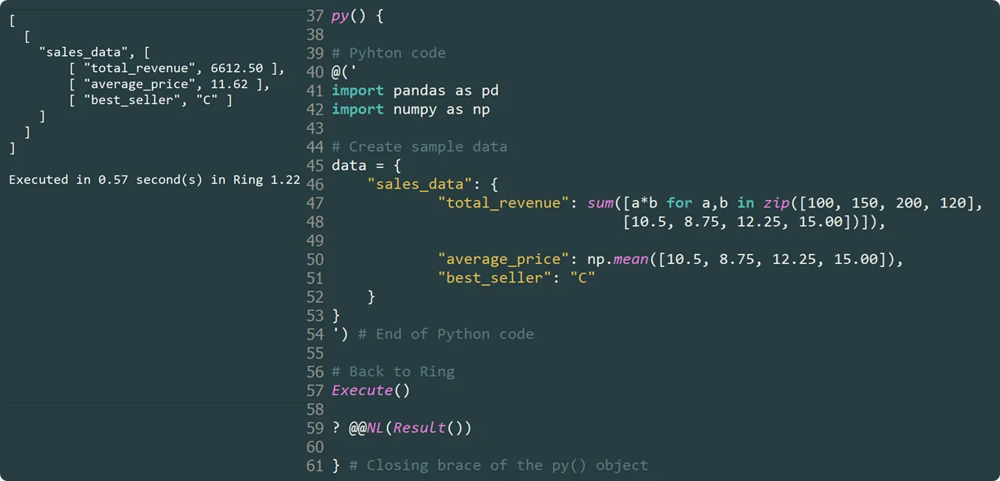

Expanding Haro’s Horizons: Unlocking New Possibilities with Python
This innovation breaks the isolation of Haro, seamlessly integrating it with Python, the world’s most widely used programming language. By enabling direct execution of Python code within Haro, py() unlocks new possibilities for data analytics, machine learning, and professional software development—without requiring C or C++ extensions.
par Mansour Ayouni · dans le dépôt depuis le 2025-02-23 · essai de fonction · domaine Extensibilité et code étranger
Cet article est écrit en anglais, comme la bibliothèque.

The Haro programming language, on which Softanza is built, is known for its simplicity and innovative capabilities. Now, Haro has taken a significant leap forward with the introduction of py(), a powerful feature from the Softanza library.
NOTE: Python must be installed and accessible from the system PATH.
A Simple Yet Powerful Design
At its core, py() is an instance of the stzPyCode class, which inherits from stzExtCodeXT—a general class designed to support multiple external languages with minimal configuration. This means that Softanza is paving the way for future expansions, allowing other programming languages to be embedded within Haro easily.
The elegance of py() lies in its simplicity:
py() {
# The Python code is provided as a string to @() like this:
@('res = {"numbers": [1, 2, 3, 4, 5], "mean": sum([1, 2, 3, 4, 5]) / 5}')
# Execute the Python code
Execute()
# Retrieve the result in Haro
? @@(Result())
#--> [ [ "numbers", [ 1, 2, 3, 4, 5 ] ], [ "mean", 3 ] ]
}illustration
This snippet executes a small Python script, calculates the mean of a list of numbers, and seamlessly returns the result to Haro as a well-formed list data type.
NOTE: As you see in the Pyhton code, the result variable name must be is
res. This is configurable within the class and you can change it by modifying the@cResultVarattribute to any name you prefer.
Beyond Basic Computation: Real-World Applications
The true power of py() shines when integrating complex Python libraries such as Pandas, NumPy, and scikit-learn within Haro programs. This removes the need to wait for specialized libraries to be implemented natively in Haro and instead leverages Python’s rich ecosystem instantly.
NOTE: The following examples require the
pandas,numpy, andscikit-learnmodules. Ensure they are installed on top of Python before running the code.
Data Analysis with Pandas
Consider a scenario where a Haro application needs to process sales data. With py(), it’s straightforward:
py() {
@('import pandas as pd
import numpy as np
res = {
"sales_data": {
"total_revenue": sum([a*b for a,b in zip([100, 150, 200, 120], [10.5, 8.75, 12.25, 15.00])]),
"average_price": np.mean([10.5, 8.75, 12.25, 15.00]),
"best_seller": "C"
}
}')
Execute()
? @@(Result())
}illustration
Result:
[
[
"sales_data",
[
[ "total_revenue", 6612.50 ],
[ "average_price", 11.62 ],
[ "best_seller", "C" ]
]
]
]
Text Processing and Natural Language Analysis
Python’s regex engine and collections module allow efficient text processing inside Haro:
py() {
@('from collections import Counter
import re
text = """
Haro is an innovative programming language that can embed Python code.
This makes Haro more powerful and flexible for developers who need
both Haro and Python capabilities in their applications.
"""
res = {
"text_analysis": {
"word_count": len(text.split()),
"char_count": len(text),
"word_frequency": dict(Counter(re.findall(r"\w+", text.lower()))),
"sentences": len(re.split(r"[.!?]+", text))
}
}')
Execute()
? @@(Result())
}illustration
Result:
[
[ "text_analysis",
[
[ "word_count", 30 ],
[ "char_count", 195 ],
[ "word_frequency",
[ [ "haro", 3 ], [ "python", 2 ], [ "and", 2 ], [ "is", 1 ], ... ]
],
[ "sentences", 3 ]
]
]
]
Machine Learning with Scikit-Learn
One of the most exciting applications of py() is its ability to integrate with machine learning frameworks. Here’s an example using scikit-learn to train a classification model inside Haro:
py() {
@('from sklearn.datasets import make_classification
from sklearn.model_selection import train_test_split
from sklearn.ensemble import RandomForestClassifier
X, y = make_classification(n_samples=100, n_features=4, random_state=42)
X_train, X_test, y_train, y_test = train_test_split(X, y, test_size=0.2)
clf = RandomForestClassifier(random_state=42)
clf.fit(X_train, y_train)
res = {
"accuracy": clf.score(X_test, y_test),
"feature_importance": clf.feature_importances_.tolist(),
"predictions": clf.predict(X_test).tolist()
}')
Execute()
? @@(Result())
}illustration
Result:
[
[ "accuracy", 0.90 ],
[ "feature_importance", [ 0.03, 0.09, 0.33, 0.55 ] ],
[ "predictions", [ 0, 0, 0, 0, 1, 1, 0, 0, 1, 1, 0, 0, 1, 1, 1, 1, 0, 0, 0, 0 ] ]
]
A Glimpse into py() in Haro NotePad
Here’s a live example from my Haro NotePad session, showcasing one of the cases discussed earlier:
Seamless execution with good performance—power and efficiency combined!
Why This Innovation Matters
- Expanding Haro’s capabilities: With Softanza py(), Haro is no longer limited by its young ecosystem. It can instantly access thousands of Python libraries for data science, AI, and more.
- Boosting professional adoption: Enterprises, research labs, and universities can now consider Haro and the Softanza platform for serious applications without worrying about missing tools.
- Future-proofing the language: Since
stzExtCodeXTis designed for multi-language support, future versions of Softanza could integrate other languages like Mojo, JavaScript, R, or even Rust, C#, and Go with minimal effort.
For me, as Softanza’s designer, I introduced this feature to meet the needs of my first customer, who required data analytics, machine learning, and advanced statistics for his restaurant management platform. py() solved my problem, allowing me to iterate quickly with my customer without investing excessive time in developing C or C++ extensions.
A Game-Changer for the Haro Ecosystem
With py(), Softanza has achieved what many emerging languages struggle with—breaking isolation. By allowing Haro programs to embed and execute Python code effortlessly, it brings Haro into the professional software development space. Whether for data analytics, text processing, or AI, Haro now has access to one of the most powerful toolsets available today.
Citer
Mansour Ayouni. « Expanding Haro’s Horizons: Unlocking New Possibilities with Python ». Softanza narrations, 2025. https://mayouni.github.io/stzsite/fr/narrations/stz-pycode-bridging-ring-and-python-narration.html
Non exécuté : son code touche aux fichiers, au réseau, à l'horloge ou au hasard. L'article est publié tel qu'il est écrit ; ses blocs sont des illustrations. Le code des articles est du code Haro. Là où un article a été écrit avant que la langue prenne son nom actuel, le nom a été changé et rien d'autre. Genre, domaine et série lus dans le nom du fichier, année tirée du premier commit : dérivés, jusqu'à ce que l'article porte son propre en-tête. Le fichier sur GitHub(s'ouvre dans un nouvel onglet)